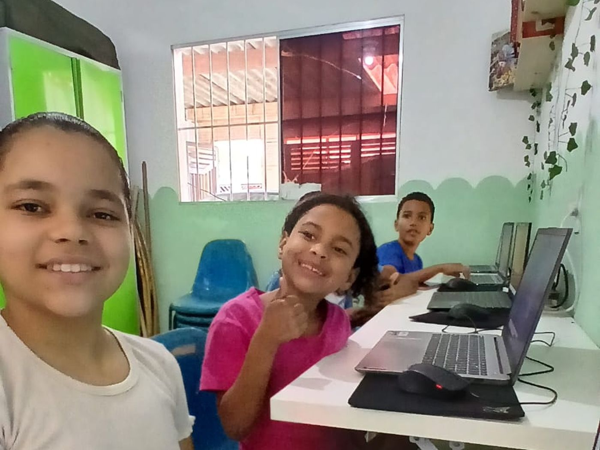

Segurança alimentar · mensal
Feirinha da Criança
Entrega de cestas, frutas e verduras para famílias em situação de vulnerabilidade. Cada família retira o que precisa na sede, com acolhimento e sem fila de espera.
Desde 9 de fevereiro de 2011
Somos uma ONG de São Vicente que abre as portas todos os dias para 300 crianças e 250 famílias da baixada santista, com educação, cultura, esporte e empreendedorismo.
Educação, Respeito e Disciplina.

Para as famílias
Se você mora em São Vicente ou Praia Grande, pode inscrever seu filho ou sua filha nas atividades da ONG. É gratuito, sem fila de espera e sem burocracia.
A Frutos do Amanhã nasceu em 9 de fevereiro de 2011, quando Heloisa Morais decidiu transformar o próprio quintal em espaço de estudo e convivência para as crianças da vizinhança, em São Vicente.
Hoje a ONG atende cerca de 250 famílias e 300 crianças em São Vicente e Praia Grande. O trabalho continua o mesmo: acolher, ensinar e caminhar junto com quem mais precisa — sem burocracia e sem lista de espera.
Nossos quatro pilares
Reforço escolar, material didático e acompanhamento das notas ao longo do ano.
Oficinas de música, dança e artes, além de saídas culturais pela região.
Turmas de futebol e atividades coletivas que ensinam disciplina e respeito.
Cursos e apoio para que as mães e os jovens gerem a própria renda.
Duas frentes que acontecem todos os meses e dependem diretamente das doações da comunidade.
Segurança alimentar · mensal
Entrega de cestas, frutas e verduras para famílias em situação de vulnerabilidade. Cada família retira o que precisa na sede, com acolhimento e sem fila de espera.

Campanha de material escolar
Arrecadação de mochilas, cadernos e uniformes para que nenhuma criança comece o ano letivo sem material. A campanha abre no fim do ano e entrega em janeiro.
Qualquer valor vira alimento, material escolar ou uma oficina a mais na semana. Você pode doar pelo PIX, doar pela plataforma com a sua conta ou entregar itens no nosso ponto de coleta.
Itens que recebemos
Rua Geralda Martins de Oliveira, 355
Vila Matias · São Vicente – SP · 11345-230
Segunda a sexta, das 9h às 17h. Para entregas grandes, avise antes pelas redes sociais.
Comidas típicas, brincadeiras e apresentações das oficinas. Toda a renda foi para as cestas da Feirinha da Criança e para a reforma da sala de reforço escolar.
Com a ajuda de voluntários e de pequenos comércios da região, a distribuição de alimentos aconteceu em São Vicente e em Praia Grande.
Já são 180 kits pedidos pelas famílias para o próximo ano letivo. A lista completa está no perfil do Instagram da ONG.